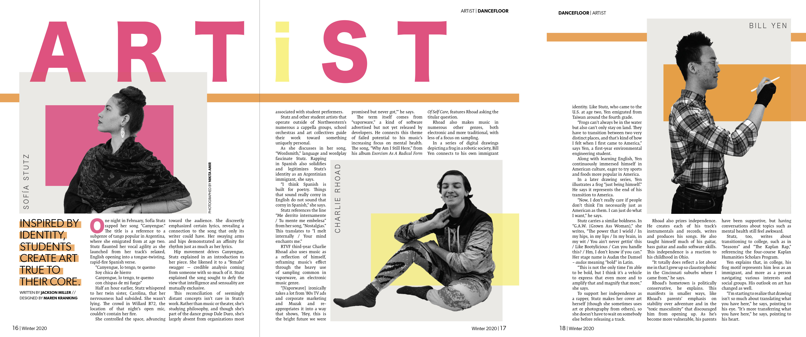
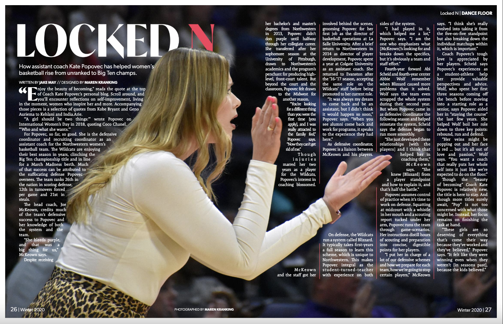

NORTH BY NORTHWESTERN
MAGAZINE
I joined North by Northwestern, Northwestern's quarterly, student-run general interest magazine, in the winter of my first year. After two quarters as a print designer on staff, I became Creative Director in the fall of my second year and have held the position since.
As the creative director of NBN, I have a lot of freedom to set the tone of the magazine through typography and color. For me, the most important part about creating a vision for a magazine is achieving cohesion; I create the style guide for each issue to keep things consistent throughout the magazine, despite having nine different designers (and styles!) on our creative team, and set a color scheme that is followed throughout each section. I'm aiming for a sleek, professional-looking magazine, and this is curated through the style guide and emphasis on white space.
WINTER 2021 ISSUE
See some of my work below, and view the full magazine here.
FALL 2020 ISSUE
See some of my work below, and view the full magazine here.
WINTER & SPRING 2020 ISSUES
During these two quarters, I worked as a designer and photographer for North by Northwestern. I learned a lot about the magazine design process, as my high school newsmagazine didn't have a specialized creative team, and began to solidify my style as a designer.
 